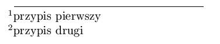
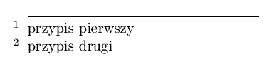

| bottom | je¿eli sk³ad jest typu ,,raggedbottom'' i strona nie jest wype³niona do koñca powoduje, ¿e przypisy s± umieszczane na dole strony (a nie tu¿ po w³a¶ciwym tek¶cie). (p. te¿ fnpos) | |
| flushmargin | przy sk³adzie tekstu przypisu, jego numer jest
wysuwany poza margines  | |
| marginal |
przy sk³adzie tekstu przypisu, jego numer jest
wstawiany na margines  | |
| multiple | w przypadku wyst±pienia kilku przypisów w jednym miejscu, numery odsy³aczy s± odzielone przecinkiem, a ¶ci¶lej, warto¶ci± makroinstrukcji \multfootsep, któr± mo¿na sobie zmieniæ; np: \def\multfootsep{\negthinspace,\thinspace}, co nieco poprawi sk³ad. | |
| norule | nie jest wstawiana kreska oddzielaj±ca tekst podstawowy od przypisów | |
| para | przypisy s± sk³adane jako jeden akapit (p. pakiet fnpara lub manyfoot) | |
| perpage | przypisy s± numerowane w obrêbie jednej strony; numerowanie jest zawsze prawid³owe -- wymaga co najmniej dwukrotnego przetworzenia tekstu (p. pakiet footnpag lub pfnote) | |
| splitrule | je¿eli przypis jest kontynuowany na nastêpnej stronie, jest on oddzielany od tekstu lini± zajmuj±c± pe³n± szeroko¶æ kolumny | |
| stable | je¿eli definicja przypisu znajdzie siê w tytule, to u¿ycie tej opcji spowoduje, ¿e nie zostanie wstawiony odsy³acz do przypisu w spisie tre¶ci -- krótko mówi±c, u¿ycie polecenie \footnote wewn±trz tytu³u, zostanie potraktowana ,,zdroworozs±dkowo'' | |
| symbol | przypisy s± numerowane symbolami (maksymalnie 9 -- potem sygnalizowany jest b³±d przepe³nienia licznika) | |
| symbol* | przypisy s± numerowane symbolami; po przekroczeniu 9 przypisów, dalsze s± numerowane liczbami (nie jest sygnalizowany b³±d) |
 W³odzimierz Macewicz
W³odzimierz Macewicz